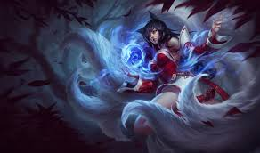
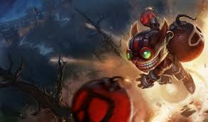
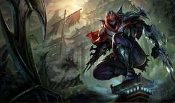

Straight through the middle of the map is where one of your team's two primary sources of damage lies. Mid laners have the most freedom of any of the lanes, having fast access to any point in the map. This is also the lane that is mostly fought over because it is also the shortest. Mid laners can have high burst, extreme mobility, or a constant source of damage. It is crucial for your team's mid laner to be present for fights or securing objectives because of the damage they offer. Also a good position to take if you like pressing a lot of buttons.

Ahri is a real fox (hah) with high mobility and burst damage. Not a character that is easy to catch and dances around the edges of teamfights to pick off high priority targets.

Ziggs makes everything around him go boom, from laying down minefields and C4 to just really big bombs. What he lacks in mobility, he makes up for in being able to hit a lot of enemies all at once.

Zed is famous (or infamous) for being the best assassin in the game. He is able to quickly warp around fights to get on top of and kill high value targets before the enemy team has time to react.